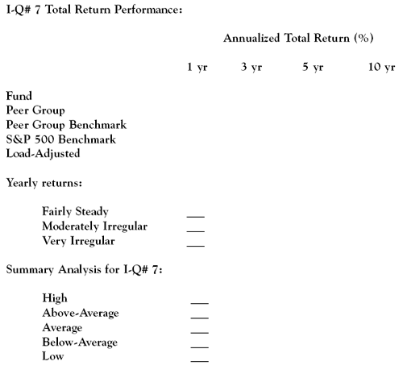

Many investors tend to focus on a mutual fund's historical performance as oppsoed to considering its underlying portfolio characteristics. With individual investors, whether these are stock, bond, or fund investors, return is the holy grail of their approach to investing. However, while an investment's return is certainly an important consideration, it would be best to first start with looking at an investment's fundamentals. After all, strong, consistent investment qualities are what produce top-rated investment performance, not vice versa. (For more insight, read The Truth Behind Mutual Fund Returns.)
With mutual fund investing, it is particularly important to look at all the components of investment quality and not just performance alone. There is too much hype and misleading information in mutual fund advertising. In this regard, the most abused metric in fund marketing materials is performance data.
The financial media continuously bombard us with what's "hot," be that a particular fund or fund category. The personal finance magazines are filled with eye-grabbing headlines about what to invest in now, next month and next year. The pervasive investment community habit of focusing on the short-term displaces investment fundamentals for big, immediate returns as selection criteria.
Too many mutual funds enjoy a very short period of success. The record books are full of superstars that disappear from one year to the next. Therefore, remember these two key points when considering fund performance as an investment quality:
Total Return
A mutual fund's performance is always expressed in terms of its total return, which is the sum of the change in a fund's net asset value (NAV), its dividends and its capital gains distributions over a given period of time.
Generally, the time periods used by investment research analysts are year-to-date, one year, three years, five years and 10 years. Of most relevance to investors are the five and 10-year periods, with the latter time frame being considered the best measure of an investment manager's ability to perform.
Total return figures are calculated and expressed net of a fund's expenses, i.e., those included in a fund's expense ratio. Investors in load-funds should note that in fund literature and the financial press, generally, the performance of these funds is reported without adjusting for the impact of the sales charges. However, 12b-1 fees, because they are part of the expense ratio calculation, are included. Morningstar and Value Line mutual fund reports all provide load-adjusted total return figures.
Market Conditions
A fund's true performance potential needs to be evaluated within the context of the market environment prevailing during the different periods used. If, in 2006, we look back at total returns for one year (2005), three years (2003 to 2005), five years (2001 to 2005) and 10 years (1996 to 2005), we are going to get a variety of percentages.
For example, as of March 2006, using a three-year measurement picks up one excellent year (2003) and two fairly good years (2004 and 2005), all of which produce an overly positive take on a fund's total return. A five-year measurement picks up two very poor years (2001 and 2002) and the aforementioned good years (2003-05), making it more representative in terms of fund performance.
Obviously, 10-year measurements of performance will most likely cover a mix of market conditions and translate into a more reliable long-term indicator of a fund's investment management abilities.
Annualized Versus Actual Total Return
For any time period of more than one year, a fund's total return is "annualized" and so reported. Let's assume that the XYZ Fund is said to have an average annual five-year total return of 12%. This does not mean that XYZ delivered an actual annual total return of 12% in each of the five years measured - the 12% is an average, or annualized return. (To get a better understanding of this concept, see All Returns Are Not Created Equal.)
While helpful as a general indicator of fund performance, the prudent fund investor will also want to look at the fund's year-to-year, or inter-annual, actual total returns. There is more investment quality reflected in a fairly steady yearly performance rather than one with drastic ups and downs. If we use an amusement park analogy for gauging the investment quality of a fund's performance, a smooth ride on a merry-go-round would be preferable to the thrills of a ride on a roller coaster.
To illustrate this point, let us revisit XYZ Fund's five-year annualized total return of 12%. It would be a fairly reliable performance indicator if XYZ had the following year-to-year results over five years: +9%, +13%, +10%, +15% and +13%. However, XYZ's 12% annualized five-year total return would not look very reliable with these inter-annual total returns: +58%, +9%, +3%, -2% and -8%.
New Funds and Managers Without a Track Record
Unless there are some compelling special circumstances, simply avoid funds with fewer than three years of performance. New managers need time to prove themselves. There are dozens of good funds with long-term track records and managers that have proved themselves. With some exceptions, when it comes to your hard-earned dollars, invest with reliable veterans rather than with the new kids on the block. (For more on this topic, see Has Your Fund Manager Been Through A Bear Market?)
The Performance Disclaimer
In the investment business, the oft repeated statement that "performance data represents past performance, which is no guarantee of future results" has become a cliché. Of course, the real purpose of this statement is to provide liability protection to purveyors of investment products as opposed to providing guidance to investors. That said, past performance is what we have to work with - and it's much better than a crystal ball. The real problem here is the phrase, "no guarantee," which should alert investors to the simple fact that future investment performance is subject to many variables.
Benchmarks
Benchmarking is one of the most important aspects of a mutual fund's total return performance. A fund's performance metrics only have meaning if they are compared to appropriate "guideposts," or benchmarks. In the financial field, there are dozens of indexes against which analysts measure the performance of any given investment.
Examples of well-known and much used market indexes include:
Peer Comparisons
In addition to formalized benchmarks, mutual funds are also compared to their peers, or peer groups, and relevant fund categories. For example, it is common for investment research materials to compare a mid cap value stock fund to funds similar in nature (peers or peer group) as well as an index that is used for the mid cap value stock category as a whole. (For more insight, read Benchmark Your Return With Indexes and Is Your Portfolio Beating Its Benchmark?)
Return to the Main Menu.
A mutual fund's total return investment quality is evidenced by relatively consistent positive performance as compared to its peers, its category benchmark and an appropriate broad market index, over five- and 10-year periods, preferably the latter.
Historical comparative data is useful to investors as a reasonable basis, albeit not a guarantee, for forming expectations about future investment results. Using historical patterns is better than depending on guesswork about what's going to happen in the future.
Mutual fund investors would be wrong to completely disregard past fund performance as a predictor of future performance. At the same time, do not base a fund selection entirely on past results or be seduced by eye-popping, extraordinary gains, which may be temporary. There are a number of fund investment qualities to be considered in evaluating a mutual fund investment.
To help readers get a quantitative fix on mutual fund annualized total return numbers, below are the fund category averages as per Morningstar's FundInvestor year-end 2005 fund statistics for its universe of 500 of the most widely traded mutual funds:
| Fund Type | 5-Year % | 10-Year % |
| Large Cap Growth | -3.4 | 7.0 |
| Large Cap Blend | 0.5 | 8.1 |
| Large Cap Value | 4.0 | 8.9 |
| Mid Cap Growth | 0.0 | 8.5 |
| Mid Cap Blend | 8.1 | 11.7 |
| Mid Cap Value | 9.4 | 11.4 |
| Small Cap Growth | 2.2 | 8.2 |
| Small Cap Blend | 9.9 | 11.2 |
| Small Cap Value | 135 | 2.8 |
| Conservative Allocation | 13.7 | 6.3 |
| Moderate Allocation | 2.9 | 7.4 |
| Foreign Stock | 6.8 | 9.7 |
| High-Quality Bond | 4.8 | 5.2 |
| High-Yield Bond | 7.3 | 5.4 |
Return to the Main Menu.
This is the entry we need to complete in the Fund Investment-Quality Scorecard for an analysis of a mutual fund's performance data:
The Morningstar and Value Line reports provide comprehensive multi-year annualized total return data. The comparisons in the Morningstar and Value Line presentations express a fund's performance as above (+) or below (-) the peer, category, and/or index benchmark annualized total return figures.
For example, if the XYZ Fund has an annualized 10-year total return of 9.5%, and the S&P 500 Index had an equivalent total return of 8.2%, the comparison would be expressed as + 1.3% for the period. This figure indicates that XYZ's performance is above that of the S&P 500 Index by that percentage. Conversely, if the XYZ and S&P total returns were reversed, the comparison would be expressed as - 1.3%.
By looking at the fund's total return numbers in the performance overviews, particularly those in the five-year and 10-year periods, we can readily determine how a fund is performing compared to its relevant benchmarks. Look for managed funds to do better than their peers, category and index benchmarks; with index funds, try to match performance to a fund's tracking index. A positive performance differential between a fund and its benchmarks is a very favorable investment quality.
As was discussed previously in this chapter, it is prudent to cross-check the annualized total return figure against the fund's year-to-year figures. If XYZ Fund's 10-year annualized total return is 9.5%, the prudent fund investor will look at XYZ's past 10-year annual total returns to see if the annualized return is representative of its mean performance. Fairly steady, above-market tracking performance is indicative of fund investment quality.
{kind=link}